关系数据库设计¶
第一范式¶
如果关系模式 \(R\) 的所有属性域都是原子的，则称该关系模式符合第一范式 (1NF)
原子性
-
如果域的元素被认为是不可分割的单元，则该域是原子的
-
非原子域的示例：复合属性、多值属性、复杂数据类型
-
如何处理非原子值
- 复合属性：使用多个属性
- 多值属性：使用多个字段，使用一张独立的表，使用单个字段但通过特殊符号分隔（不推荐）
-
非原子性的缺点：存储复杂、查询复杂、数据冗余
-
原子性实际上是关于域元素如何被使用的属性
e.g. 学号 CS0012 如果提取前两个字符来查找系别，那么学号的域就不是原子的
关系数据库设计陷阱¶
有两种设计方法：自顶向下、自底向上（泛关系 \(\Rightarrow\) 分解 \(\Rightarrow\) 好的数据库模式）
- 缺陷
- 冗余：浪费空间，并可能导致数据不一致
- 更新异常：使更新操作复杂化，引入了不一致的可能性
- 判断特定关系 \(R\) 是否处于“好”的形式：无冗余
- 如果关系 \(R\) 不处于“好”的形式，将其分解为一组关系，该分解满足
- 无损连接分解
- 保持依赖的（函数依赖）
- 每个关系 \(R_i\) 都处于“好”的形式：BCNF 或 3NF（无冗余）
函数依赖 FD¶
- 定义：设 \(R\) 为一个关系模式，\(\alpha\) 和 \(\beta\) 为属性集，即 \(\alpha \subseteq R\) 且 \(\beta \subseteq R\)
-
当且仅当对于 \(R\) 的任何合法关系 \(r(R)\)，只要 \(r\) 中的任意两个元组 \(t_1\) 和 \(t_2\) 在属性 \(\alpha\) 上取值相同，它们在属性 \(\beta\) 上也一定取值相同时，称函数依赖 \(\alpha \to \beta\) 在 \(R\) 上成立，即：
\[ t_1[\alpha] = t_2[\alpha] \implies t_1[\beta] = t_2[\beta] \] -
读作：\(\beta\) 函数依赖于 \(\alpha\)，\(\alpha\) 函数决定 \(\beta\)
Example
\(A \to B\) 不成立，\(B \to A\) 可能成立
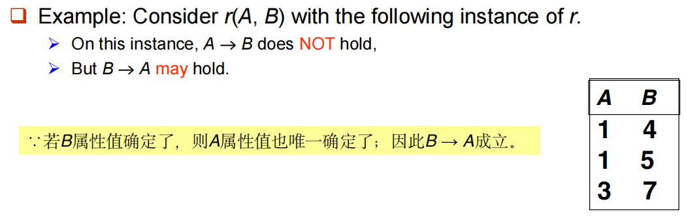
- 函数依赖 vs 码 ：函数依赖是码概念的泛化
- \(K\) 是关系模式 \(R\) 的超码，当且仅当 \(K \to R\)
- \(K\) 是 \(R\) 的候选码，当且仅当：\(K \to R\)，且不存在 \(\alpha \subset K\) 使得 \(\alpha \to R\)（即 \(K\) 的真子集均不能决定 \(R\)）
- 函数依赖的使用
- 测试关系：如果关系 \(r\) 在函数依赖集 \(F\) 下是合法的，我们说 \(r\) 满足 \(F\)
- 在合法关系集上指定约束（模式层面）：如果 \(R\) 上所有合法关系 \(r\) 都满足函数依赖集 \(F\)，我们说 \(F\) 在 \(R\) 上成立
Warning
可以说关系 \(r(R)\) 满足 \(F\)，但不能仅根据一个 \(r(R)\) 就说 \(F\) 在模式 \(R\) 上成立（关系中的数据可能会变）
容易判别一个 \(r\) 是否满足给定的 \(F\)；不易判别 \(F\) 是否在 \(R\) 上成立（不能仅由某个 \(r\) 推断出 \(F\)）
- 通常情况下，如果 \(\beta \subseteq \alpha\)，则 \(\alpha \to \beta\) 是平凡的，否则是非平凡的
函数依赖闭包¶
-
给定一个函数依赖集 \(F\)，存在某些被 \(F\) 逻辑蕴含的其他函数依赖
e.g.：如果 \(A \to B\) 且 \(B \to C\)，那么可以推断出 \(A \to C\)
-
定义：被 \(F\) 逻辑蕴含的所有函数依赖的集合称为 \(F\) 的闭包，记作 \(F^+\)
- 阿姆斯特朗公理：提供了寻找 \(F^+\) 的推理规则
- 自反律：如果 \(\beta \subseteq \alpha\)，则 \(\alpha \to \beta\) （平凡依赖）
- 增补律：如果 \(\alpha \to \beta\)，则 \(\gamma\alpha \to \gamma\beta\) 或 \(\gamma\alpha \to \beta\)
- 传递律：如果 \(\alpha \to \beta\) 且 \(\beta \to \gamma\)，则 \(\alpha \to \gamma\)
- 特点：可靠的：只生成实际成立的函数依赖；完备的：生成所有成立的函数依赖
附加规则
- 合并律：如果 \(\alpha \to \beta\) 且 \(\alpha \to \gamma\) 成立，则 \(\alpha \to \beta\gamma\) 成立
- 分解律：如果 \(\alpha \to \beta\gamma\) 成立，则 \(\alpha \to \beta\) 且 \(\alpha \to \gamma\) 成立
- 伪传递律：如果 \(\alpha \to \beta\) 且 \(\gamma\beta \to \delta\) 成立，则 \(\alpha\gamma \to \delta\) 成立
Example
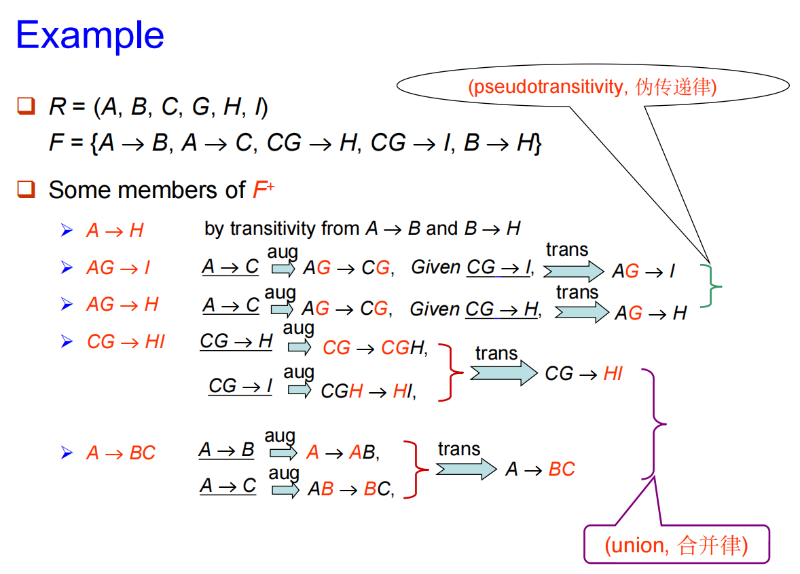
- 计算函数依赖集 \(F\) 的闭包：重复执行以下操作（太复杂，用属性集闭包代替）
- 对每个函数依赖 \(f\) 应用自反律和增补律，将得到的结果函数依赖添加到 \(F^+\) 中
- 对每对函数依赖 \(f_1\) 和 \(f_2\) 使用传递律进行组合，将结果函数依赖添加到 \(F^+\) 中
属性集闭包¶
-
定义：给定一个属性集 \(\alpha\)，在 \(F\) 下 \(\alpha\) 的闭包记作 \(\alpha^+\)，它是在 \(F\) 下由 \(\alpha\) 函数决定的所有属性的集合（在 \(F\) 下由 \(\alpha\) 所直接和间接函数决定的属性的集合称为 \(\alpha^+\)）
-
用途：
- 测试 \(\alpha \to \beta\) 是否在 \(F^+\) 中：\(\beta \subseteq \alpha^+\)
- 测试 \(\alpha\) 是否为超码：\(\alpha \to R\) 是否在 \(F^+\) 中，即 \(R \subseteq \alpha^+\)
- 计算 \(F\) 的闭包：对于每个 \(S \subseteq \gamma^+\)，函数依赖 \(\gamma \to S\) 包含在 \(F^+\) 中
- 属性集闭包的计算（避免了找 \(F^+\)（反复使用公理）的麻烦）
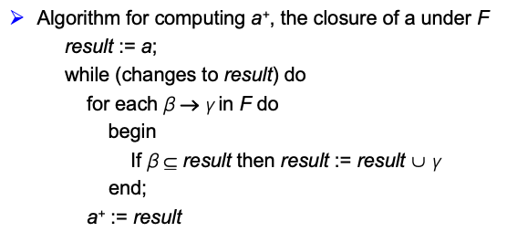
属性集闭包求解
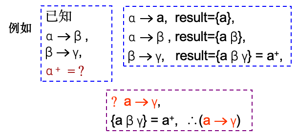
利用属性集闭包判断候选码和超码
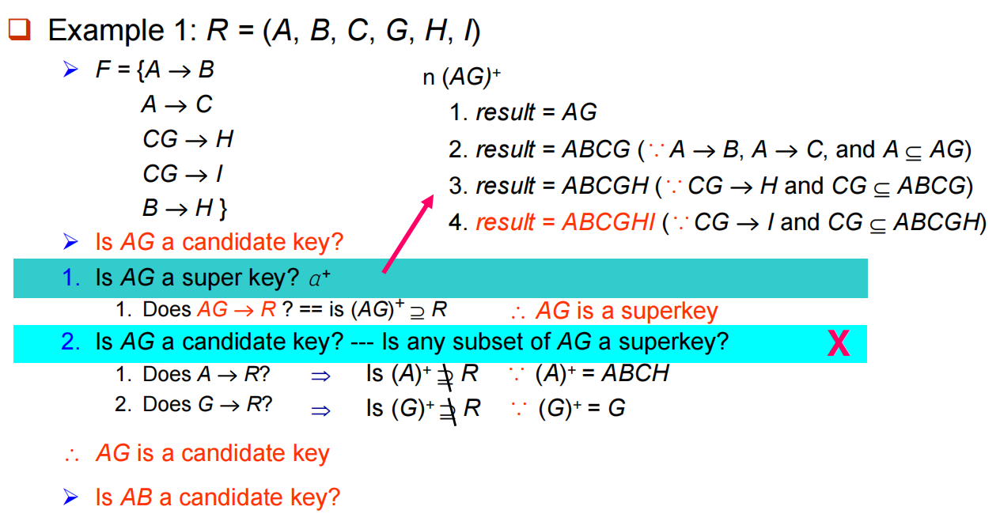
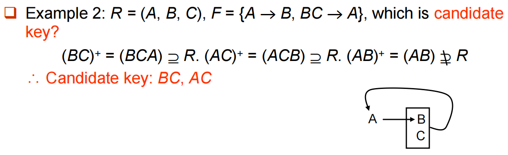
正则覆盖¶
-
\(F\) 的正则覆盖是一个与 \(F\) 逻辑等价的最小函数依赖集，记作 \(F_c\)
-
正则覆盖的计算：删除无关属性
-
函数依赖集中可能存在可以从其他依赖推导出来的冗余依赖
\[ F = \{A \to C, A \to B, B \to C\} \implies F_c = \{A \to B, B \to C\} \] -
函数依赖左侧的部分属性可能是冗余的
\[ F = \{A \to B, B \to C, AC \to D\} \implies \{A \to B, B \to C, AC \to D, A \to D\} \implies \{A \to B, B \to C, A \to D\} \] -
函数依赖右侧的部分属性可能是冗余的
\[ F = \{A \to B, B \to C, A \to CD\} \implies \{A \to B, B \to C, A \to C, A \to D\} \implies \{A \to B, B \to C, A \to D\} \] -
正则覆盖算法：重复执行以下步骤：
- 使用合并律将 \(F\) 中所有形如 \(\alpha_1 \to \beta_1\) 和 \(\alpha_1 \to \beta_2\) 的依赖替换为 \(\alpha_1 \to \beta_1\beta_2\)
- 寻找在 \(\alpha\) 或 \(\beta\) 中包含无关属性的函数依赖 \(\alpha \to \beta\)，如果找到了无关属性，将其从 \(\alpha \to \beta\) 中删除
- 直到 \(F\) 不再发生变化
正则覆盖求解
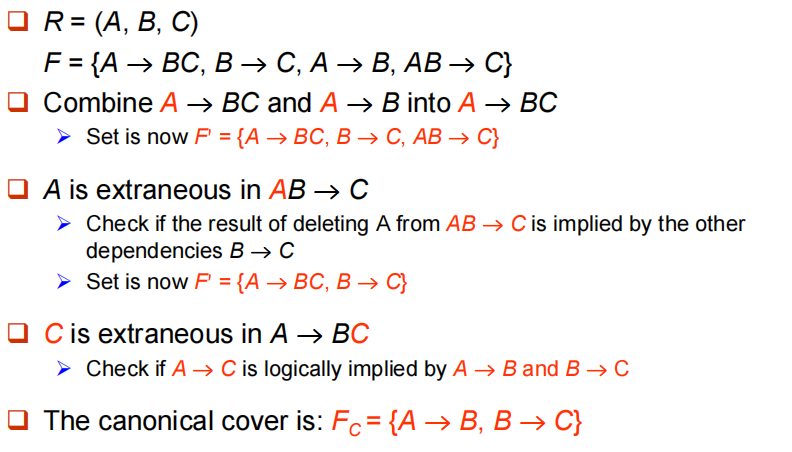
分解¶
分解的要求：
- 原始模式 \((R)\) 的所有属性必须出现在分解后的模式 \((R_1, R_2)\) 中，即 \(R = R_1 \cup R_2\)
-
无损连接分解：
-
对于模式 \(R\) 上所有可能的关系 \(r\)
\[ r = \Pi_{R1}(r) \bowtie \Pi_{R2}(r) \] -
判定准则：\(F^+\) 中至少包含以下依赖之一（无损连接分解的条件：分解后的两个子模式的共同属性必须是 \(R_1\) 或 \(R_2\) 的码）
\[ \{R_1 \cap R_2\} \to R_1 或 \{R_1 \cap R_2\} \to R_2 \]
-
-
依赖保持：\((F_1 \cup F_2 \cup \dots \cup F_n)^+ = F^+\)
依赖保持的测试
为了检查在将关系 \(R\) 分解为 \(\{R_1, R_2, \dots, R_n\}\) 的过程中，函数依赖 \(\alpha \to \beta\) 是否得到了保持，可以应用以下简化测试算法：
- 初始化结果集：\(result = \alpha\)
- 循环直至 \(result\) 不再变化：
- 遍历分解后的每一个子模式 \(R_i\)
- 计算 \(t = (result \cap R_i)^+ \cap R_i\)
- 更新结果集：\(result = result \cup t\)
- 判定结论：如果最终的 \(result\) 包含 \(\beta\) 中的所有属性，则函数依赖 \(\alpha \to \beta\) 是保持的
Example
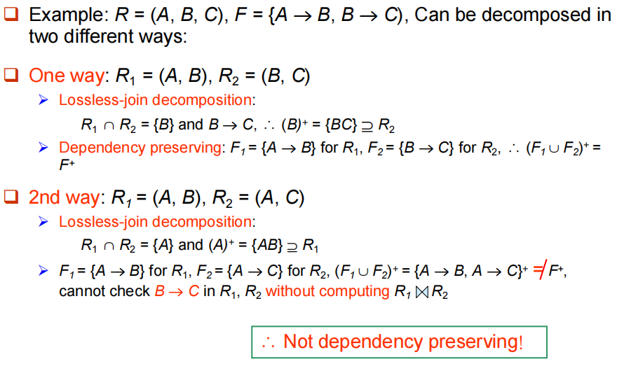
Boyce-Codd 范式¶
- 定义：关系模式 \(R\) 对于函数依赖集 \(F\) 处于 BCNF，当且仅当对于 \(F^+\) 中所有形如 \(\alpha \to \beta\) 的函数依赖（其中 \(\alpha \subseteq R\) 且 \(\beta \subseteq R\)），下面条件至少有一个成立：
- \(\alpha \to \beta\) 是平凡的函数依赖（即 \(\beta \subseteq \alpha\)）
- \(\alpha\) 是模式 \(R\) 的一个超码
BCNF 判定
- 要检查一个关系模式 \(R\) 是否符合 BCNF，只需检查给定集合 \(F\) 中的依赖是否违反 BCNF，而不需要检查 \(F^+\) 中的所有依赖
- 但是在测试 \(R\) 分解后的关系 \(R_i\) 时，仅使用 \(F\) 进行测试可能是错误的，需要使用 \(F^+\)
- BCNF 分解：
- 寻找不符合 BCNF 两个条件的函数依赖 \(\alpha \to \beta\)
- 将 \(R_i\) 分解为两个子模式：\(R_{i1} = (\alpha, \beta)\) 和 \(R_{i2} = (R_i - \beta)\)，\(\alpha\) 是 \(R_{i1}\) 和 \(R_{i2}\) 的共同属性
- 最终，每个子模式都符合 BCNF，且该分解是无损连接的
Example1
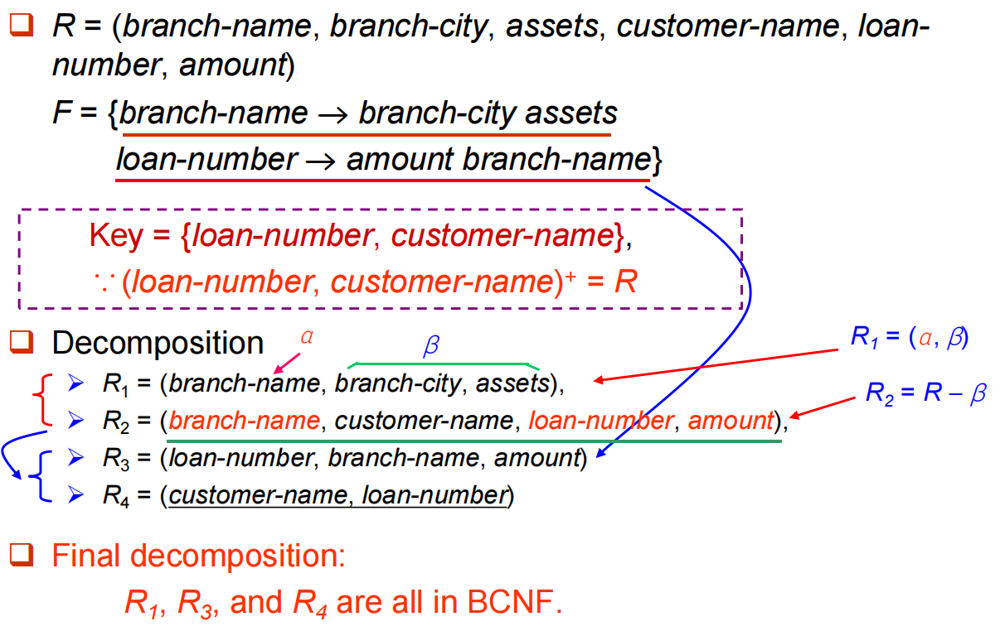
Example2
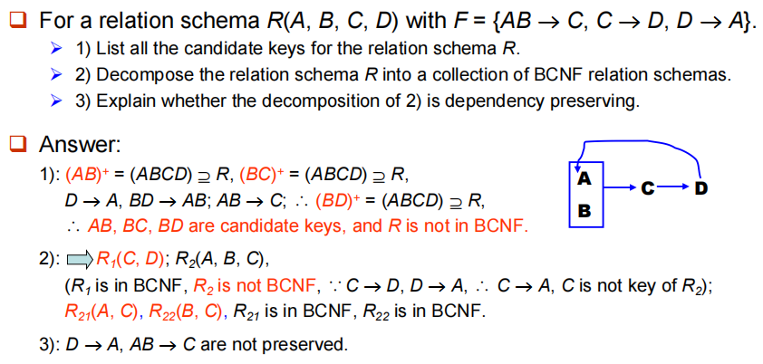
Warning
不一定能够获得一个既符合 BCNF 又保持依赖的分解
Example
\(R = (J, K, L)\) 其中 \(J\) 学生、\(K\) 课程、\(L\) 教师
\(F = \{JK \rightarrow L, L \rightarrow K\}\)
两个候选码 = \(JK\) 和 \(JL\)
- \(R\) 不符合 BCNF：因为对于 \(L \rightarrow K\)，\(L\) 不是码
- 对 \(R\) 的任何分解都将无法保持 \(JK \rightarrow L\) e.g. \(R_1 = (L, K), R_2 = (J, L)\)，属于 BCNF，但不保持依赖
因此，我们无法始终同时满足所有三个设计目标：无损连接、BCNF、保持依赖
第三范式¶
第三范式
为了解决分解为 BCNF 不能保持依赖的问题，定义一种较弱的范式，称为第三范式
- 允许一定程度的冗余（及其产生的问题）
- 但函数依赖可以在单个关系上进行检查，而无需计算连接，即保持依赖
- 总能找到一种无损连接且保持依赖的 3NF 分解
- 定义：一个关系模式 \(R\) 处于 3NF，如果对于 \(F^+\) 中所有的 \(\alpha \rightarrow \beta\)，至少满足以下条件之一：
- \(\alpha \rightarrow \beta\) 是平凡的（即 \(\beta \subseteq \alpha\)）
- \(\alpha\) 是 \(R\) 的一个超码
- \(\beta - \alpha\) 中的每个属性 \(A\) 都包含在 \(R\) 的一个候选码中（即 \(A \in \beta - \alpha\) 是主属性；若 \(\alpha \cap \beta = \emptyset\)，则 \(A = \beta\) 是主属性）
Tips
- 如果一个关系处于 BCNF，则它一定处于 3NF
- 第三个条件是对 BCNF 的最小化放宽，以确保保持依赖
Example
\(R = (J, K, L)\) 其中 \(J\) 学生、\(K\) 课程、\(L\) 教师
\(F = \{JK \rightarrow L, L \rightarrow K\}\)
该实例处于 3NF，但是会存在一定的冗余（不需要分解，所以可能会存在信息重复的问题）
- 3NF 测试
- 只需检查 \(F\) 中的函数依赖，无需检查 \(F^+\)
- 使用属性闭包检查每个依赖 \(\alpha \rightarrow \beta\)，以判断 \(\alpha\) 是否为超码
- 如果 \(\alpha\) 不是超码，必须验证 \(\beta\) 中的每个属性是否包含在 \(R\) 的候选码中
Warning
这种测试开销较大，因为它涉及查找所有候选码：测试 3NF 已被证明是 NP-hard 问题（但是分解为第三范式可以在多项式时间内完成）
- 3NF 分解
- 求正则覆盖 \(F_c\)
- 遍历 \(F_c\) 中的每一个函数依赖 \(\alpha \to \beta\)，组合成一个子模式 \(R_i = (\alpha, \beta)\)（保持以来）
- 如果没有任何子模式包含候选码，则选出 \(R\) 的任意一个候选码，创建一个新的子模式
Example
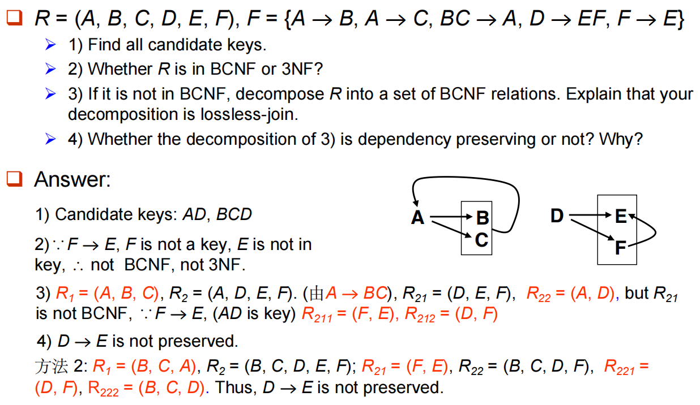
多值依赖¶
Warning
即使满足 BCNF ，仍然可能存在数据冗余
Example
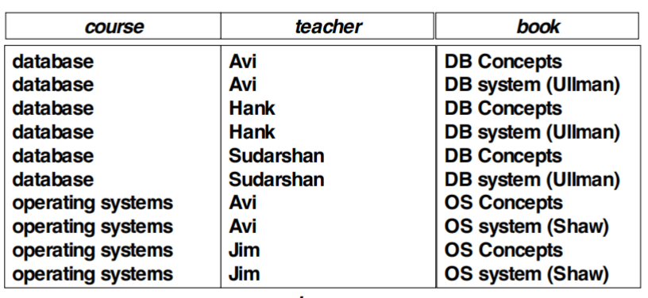
最好分解为：（分解之后也满足 4NF）
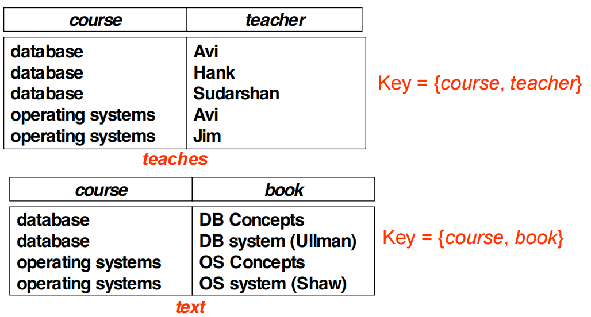
-
定义：令 \(R\) 为一个关系模式，\(\alpha \subseteq R\) 且 \(\beta \subseteq R\)
若在 \(R\) 的任何合法关系 \(r(R)\) 中，对于 \(r\) 中所有满足 \(t_1[\alpha] = t_2[\alpha]\) 的元组对 \(t_1\) 和 \(t_2\)，在 \(r\) 中都存在元组 \(t_3\) 和 \(t_4\) 满足：
- \(t_1[\alpha] = t_2[\alpha] = t_3[\alpha] = t_4[\alpha]\)
- \(t_3[\beta] = t_1[\beta]\) & \(t_4[\beta] = t_2[\beta]\)
- \(t_3[R - \alpha - \beta] = t_2[R - \alpha - \beta]\) & \(t_4[R - \alpha - \beta] = t_1[R - \alpha - \beta]\)
则称多值依赖 \(\alpha \twoheadrightarrow \beta\) 在 \(R\) 上成立
通俗易懂
当一个属性（人）能对应多组独立的信息（爱好、鞋号）时，这些信息之间就像平行线一样互不相关，但却被迫塞在同一个表里相互“连累”重写
- 理论：如果 \(\alpha \to \beta\)，那么 \(\alpha \twoheadrightarrow \beta\)
第四范式¶
- 定义：一个关系模式 \(R\) 关于函数依赖和多值依赖集 \(D\) 属于 4NF，是指对于 \(D^+\) 中所有形如 \(\alpha \twoheadrightarrow \beta\) 的多值依赖（其中 \(\alpha \subseteq R\) 且 \(\beta \subseteq R\)），至少满足以下条件之一：
- \(\alpha \twoheadrightarrow \beta\) 是平凡的（即 \(\beta \subseteq \alpha\) 或 \(\alpha \cup \beta = R\)）
- \(\alpha\) 是模式 \(R\) 的一个超码
- 如果一个关系属于 4NF，则它一定属于 BCNF
- 分解：识别并提取不满足 4NF 的多值依赖 \(\alpha \twoheadrightarrow \beta\)，将原模式分解为包含 \((\alpha \cup \beta)\) 和 \((R - \beta)\) 的两个子模式